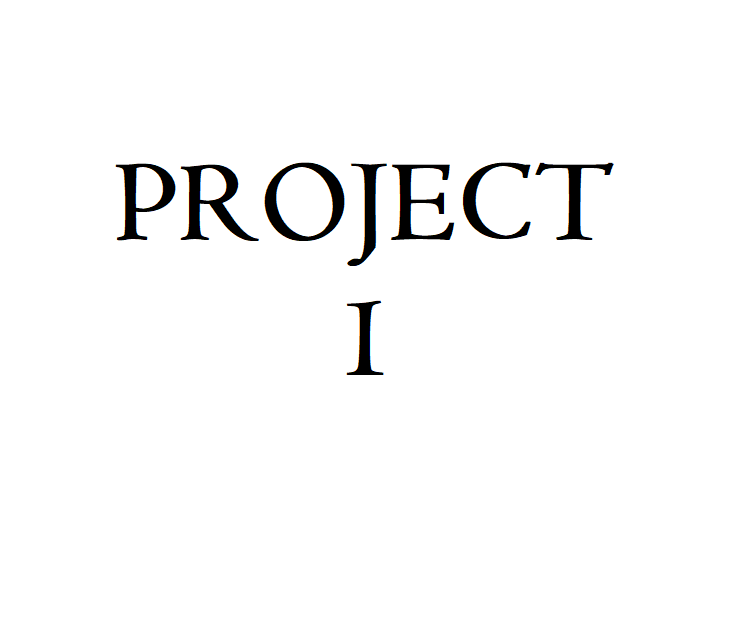
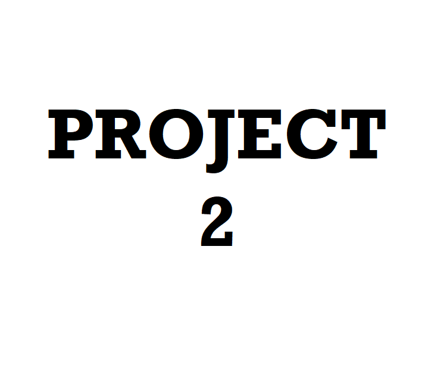

Airline Reservation
The Dowry system is evil in society. It has reduced the sacred affair of marriage to a business deal. Brides are treated as a marketable commodity. The parents of the brides are often put under inhuman pressure for a handsome dowry. Sometimes they become pauper to get their daughters married. In many cases, young brides are ruthlessly tortured or pushed to suicide. To eradicate this social evil, a total change in the outlook of society is a must. The woman has to be considered as an equal partner of the man. Widespread education and employment and their rights of property can bring about the right remedy. Legal prohibition of dowry is not enough. Strong social disapproval of dowry is the only guarantee against this evil. Our youth should come forward to generate public awareness against this shameful custom.
Stock Management
Since March 8, 1990, Woman’s Day is being observed by SAARC (South Asian Association for Regional Cooperation) consisting of seven countries, namely, India, Pakistan, Nepal, Bhutan, Bangladesh, Sri Lanka, and the Maldives. The day was marked to focus on the problems of girl children in these countries. It is a pity that girl children especially in underdeveloped countries are victims of extreme negligence and dishonor. The birth of a girl child is looked upon by the parents as a cause of pity. They are deprived of proper nutrition, education, and economic facilities, and social status or honor. Superstitions and social and religious prejudices give rise to such distressing conditions. We must root out these prejudices and ensure a bright future for the girl children by giving them proper education. Moreover, woman’s rights must be established in social and economic fields
Tourism Management
Since March 8, 1990, Woman’s Day is being observed by SAARC (South Asian Association for Regional Cooperation) consisting of seven countries, namely, India, Pakistan, Nepal, Bhutan, Bangladesh, Sri Lanka, and the Maldives. The day was marked to focus on the problems of girl children in these countries. It is a pity that girl children especially in underdeveloped countries are victims of extreme negligence and dishonor. The birth of a girl child is looked upon by the parents as a cause of pity. They are deprived of proper nutrition, education, and economic facilities, and social status or honor. Superstitions and social and religious prejudices give rise to such distressing conditions. We must root out these prejudices and ensure a bright future for the girl children by giving them proper education. Moreover, woman’s rights must be established in social and economic fields